|
Nanjing University of Aeronautics and Astronautics |
iBRAIN |
Functional Alignment and Feature Learning
with Neuroimaging Data
Presented by: Muhammad Yousefnezhad
June/2018
Outline
- Background
- Functional Alignment
- Hyperalignment
- Local Discriminant Hyperalignment (LDHA)
- Deep Hyperalignment (DHA)
- Feature Analysis
- Snapshot Selection
- Multi-Region Feature Extraction
- Weighted Spectral Cluster Ensemble (WSCE)
- Multi-Region Ensemble Learning (MREL)
- Deep Representational Similarity Analysis (DRSA)
- Imbalance Multi-Voxel Pattern Analysis
- Conclusion
Motivation
 Recovery Movies |
 Semantic Maps |
Motivation
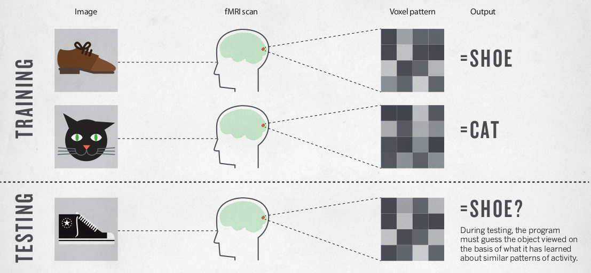Smith Nature 2013
Imaging Technologies
|
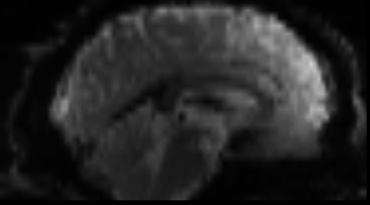 Functional Imaging |
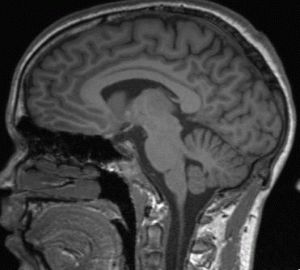 Anatomical Imaging |
fMRI vs. Others
- Prior to the discovery that within-area patterns of response in fMRI carried information that afforded decoding of stimulus distinctions.
- It was generally believed that the spatial resolution of fMRI allowed investigators to ask only which task or stimulus activated a region globally.
- Instead of asking what a region’s function is, in terms of a single brain state associated with global activity, fMRI investigators can now ask what information is represented in a region, in terms of brain states associated with distinct patterns of activity, and how that information is encoded and organized .
Pipeline of fMRI Analysis
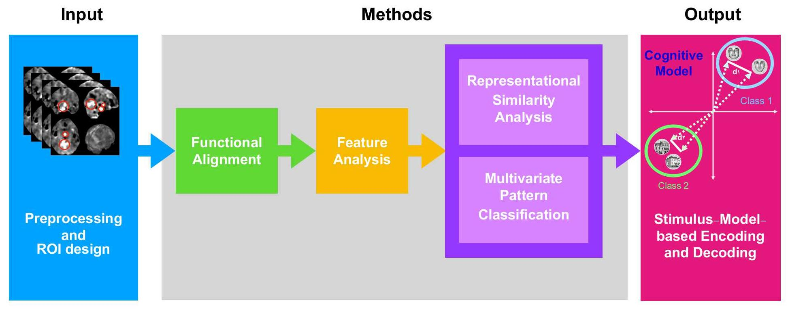Functional
Alignment
Hyperalignment
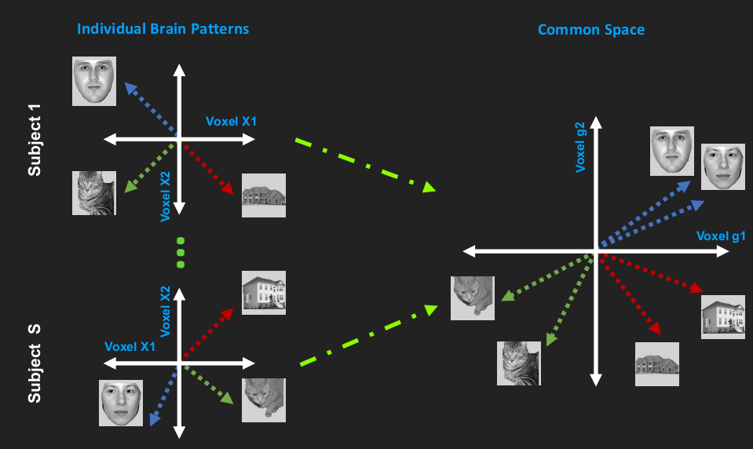Classical Hyperalignment
\[ \underset{\mathbf{R}^{(i)}, \mathbf{G}}{\min}\sum_{i = 1}^{S}\Big\| \mathbf{X}^{(i)}\mathbf{R}^{(i)} - \mathbf{G} \Big\|^2_F \]
subject to
\[ \Big(\mathbf{X}^{(\ell)}\mathbf{R}^{(\ell)}\Big)^\top\mathbf{X}^{(\ell)}\mathbf{R}^{(\ell)}=\mathbf{I} \]
where the shared space $G$ is denoted by
\[ \mathbf{G} = \frac{1}{S} \sum_{j=1}^{S} \mathbf{X}^{(j)}\mathbf{R}^{(j)} \]
Regularized Hyperalignment
\[ \underset{\mathbf{R}^{(i)}, \mathbf{G}}{\min}\sum_{i = 1}^{S}\Big\| \mathbf{X}^{(i)}\mathbf{R}^{(i)} - \mathbf{G} \Big\|^2_F \]
subject to
\[ \Big(\mathbf{R}^{(\ell)}\Big)^\top\bigg(\Big(\mathbf{X}^{(\ell)}\Big)^\top\mathbf{X}^{(\ell)} + \epsilon\mathbf{I}\bigg)\mathbf{R}^{(\ell)}=\mathbf{I} \]
where the $\epsilon$ is the regularization term.
Kernelized Hyperalignment
\[ \underset{\mathbf{R}^{(i)}, \mathbf{G}}{\min}\sum_{i = 1}^{S}\Big\| \mathbf{\Phi}(\mathbf{X}^{(i)})\mathbf{R}^{(i)} - \mathbf{G} \Big\|^2_F \]
subject to
\[ \Big(\mathbf{\Phi}(\mathbf{X}^{(\ell)})\mathbf{R}^{(\ell)}\Big)^\top\mathbf{\Phi}(\mathbf{X}^{(\ell)})\mathbf{R}^{(\ell)}=\mathbf{I} \]
where $\mathbf{\Phi}$ is a kernel function, and $\mathbf{G}$ can be calculated as follows:
\[ \mathbf{G} = \frac{1}{S} \sum_{j=1}^{S} \mathbf{\Phi}(\mathbf{X}^{(j)})\mathbf{R}^{(j)} \]
Generalized Hyperalignment
\[ \underset{\mathbf{R}^{(i)}, \mathbf{G}}{\min}\sum_{i = 1}^{S} \Big\| {f}\big(\mathbf{X}^{(i)}\big)\mathbf{R}^{(i)} - \mathbf{G} \Big\|^2_F \]
subject to
\[ \Big(\mathbf{R}^{(\ell)}\Big)^\top\bigg(\Big(f\big(\mathbf{X}^{(\ell)}\big)\Big)^\top f\big(\mathbf{X}^{(\ell)}\big) + \epsilon\mathbf{I}\bigg)\mathbf{R}^{(\ell)}=\mathbf{I} \]
where $\mathbf{G}$ is
\[ \mathbf{G} = \frac{1}{S} \sum_{j=1}^{S} f\big(\mathbf{X}^{(j)}\big)\mathbf{R}^{(j)} \]
Local Discriminant Hyperalignment

Local Discriminant Hyperalignment
Local Discriminant Hyperalignment (LDHA) uses following objective function: \[ \underset{\mathbf{R}^{(i)}, \mathbf{R}^{(j)}}{\max}\sum_{i = 1}^{S}\sum_{j = i+1}^{S}\text{tr}\Big(\big(\mathbf{R}^{(i)}\big)^\top\big(\mathbf{\Delta}^{(i,j)} - \frac{\eta}{T^2}\mathbf{\Omega}^{(i,j)}\big)\mathbf{R}^{(j)}\Big) \]
where $\eta$ is the number of within-class elements, and $T$ denotes all time points. Further, the covariance within-class matrix $\mathbf{\Delta}^{(i,j)}=\Big\{\mathbf{\delta}^{(i,j)}_{mn}\Big\}$ and the covariance between-class matrix $\mathbf{\Omega}^{(i,j)}=\Big\{\mathbf{\omega}^{(i,j)}_{mn}\Big\}$ are denoted as follows: \[ \mathbf{\delta}^{(i,j)}_{mn} = \sum_{\ell=1}^{T}\sum_{k=1}^{T} \mathbf{\alpha}_{\ell k}{x}_{\ell m}^{(i)}{x}_{kn}^{(j)} + \mathbf{\alpha}_{\ell k}{x}_{\ell n}^{(i)}{x}_{k m}^{(j)} \] \[ \mathbf{\omega}^{(i,j)}_{mn} = \sum_{\ell=1}^{T}\sum_{k=1}^{T} (1 - \mathbf{\alpha}_{\ell k}){x}_{\ell m}^{(i)}{x}_{kn}^{(j)} + (1 - \mathbf{\alpha}_{\ell k}){x}_{\ell n}^{(i)}{x}_{k m}^{(j)} \]
LDHA: Optimization
We firstly define following matrix by using the covariance matrices: \[ \mathbf{\Phi}^{(i, j)} = \mathbf{\Delta}^{(i,j)} - \frac{\eta}{T^2}\mathbf{\Omega}^{(i,j)} \]
Then, we have: \[ \begin{split} \mathbf{P}^{(i, j)} = \big(\widetilde{\mathbf{\Phi}}^{(i)}\big)^{-\frac{1}{2}} \mathbf{\Phi}^{(i, j)} \big(\widetilde{\mathbf{\Phi}}^{(j)}\big)^{-\frac{1}{2}} \end{split} \]
where $\mathbf{P}^{(i, j)} \neq \mathbf{P}^{(j, i)}$, and $\widetilde{\mathbf{\Phi}}^{(\ell)} = (\mathbf{X}^{(\ell)})^\top \mathbf{X}^{(\ell)}$. Now, we can apply rank-$m$ SVD decomposition on $\mathbf{P}^{(i, j)}$ as follows: \[ \mathbf{P}^{(i, j)} \overset{SVD}{=} \mathbf{\Omega}^{(i, j)}\mathbf{\Sigma}^{(i, j)}\big(\mathbf{\Psi}^{(i, j)}\big)^\top \]
Finally, we can calculate the mapping as follows: \[ \begin{split} \mathbf{R}^{(i)} = \sum_{j=1}^{S} \big(\widetilde{\mathbf{\Phi}}^{(i)}\big)^{-\frac{1}{2}} \mathbf{\Omega}^{(i, j)} \end{split} \]
Deep Hyperalignment
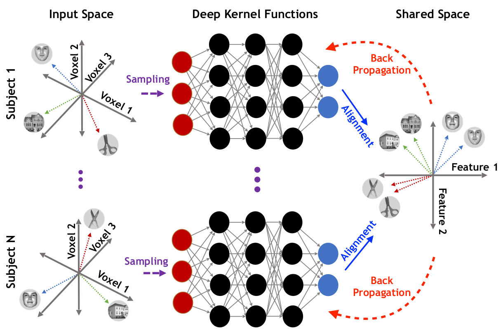Deep Hyperalignment
\[ \underset{\substack{\mathbf{G}, \mathbf{R}^{(i)},\mathbf{\theta}^{(i)}}}{\min}\sum_{i = 1}^{S} \Big\| \mathbf{G} - {f}_{i}\big(\mathbf{X}^{(i)}\text{;}\mathbf{\theta}^{(i)}\big)\mathbf{R}^{(i)} \Big\|_{F}^{2} \]
subject to \[ \Big(\mathbf{R}^{(\ell)}\Big)^\top\bigg(\Big({f}_{\ell}\big(\mathbf{X}^{(\ell)}\text{;}\mathbf{\theta}^{(\ell)}\big)\Big)^\top {f}_{\ell}\big(\mathbf{X}^{(\ell)}\text{;}\mathbf{\theta}^{(\ell)}\big) + {\epsilon}\mathbf{I}\bigg)\mathbf{R}^{(\ell)}=\mathbf{I} \]
where the shared space $\mathbf{G}$ is calculated as follows: \[ \mathbf{G} = \frac{1}{S} \sum_{j=1}^{S} {f}_{j}\big(\mathbf{X}^{(j)}\text{;}\mathbf{\theta}^{(j)}\big)\mathbf{R}^{(j)} \]
and ${f}_{\ell}$ is the deep neural network such as: \[ {f}_{\ell}\big(\mathbf{X}^{(\ell)}\text{;}\mathbf{\theta}^{(\ell)}\big) = \text{mat}\Big(\mathbf{h}_{C}^{(\ell)}, T, V_{new}\Big),\quad \mathbf{h}_{m}^{(\ell)} = g\Big(\mathbf{W}_{m}^{(\ell)}\mathbf{h}_{m-1}^{(\ell)}+ \mathbf{b}_{m}^{(\ell)}\Big)\text{, }\quad \\ \text{where}\quad \mathbf{h}_{1}^{(\ell)}=\text{vec}\big(\mathbf{X}^{(\ell)}\big)\quad\text{and}\quad m=2\text{:}C \]
DHA: Optimization
We employ the rank-$m$ SVD as follows: \[ {f}_{\ell}\big(\mathbf{X}^{(\ell)}\text{;}\mathbf{\theta}^{(\ell)}\big) \overset{SVD}{=} \mathbf{\Omega}^{(\ell)}\mathbf{\Sigma}^{(\ell)}\big(\mathbf{\Psi}^{(\ell)}\big)^\top\text{, }\qquad\ell=1\text{:}S \]
Then, projection matrix can be calculated as follows: \[ \begin{split} \mathbf{P}^{(\ell)}={f}_{\ell}\big(\mathbf{X}^{(\ell)}\text{;}\mathbf{\theta}^{(\ell)}\big)\bigg(\Big({f}_{\ell}\big(\mathbf{X}^{(\ell)}\text{;}\mathbf{\theta}^{(\ell)}\big)\Big)^\top{f}_{\ell}\big(\mathbf{X}^{(\ell)}\text{;}\mathbf{\theta}^{(\ell)}\big)+\epsilon\mathbf{I}\bigg)^{-1}\Big({f}_{\ell}\big(\mathbf{X}^{(\ell)}\text{;}\mathbf{\theta}^{(\ell)}\big)\Big)^\top\\ =\mathbf{\Omega}^{(\ell)}\big(\mathbf{\Sigma}^{(\ell)}\big)^\top\Big(\mathbf{\Sigma}^{(\ell)}\big(\mathbf{\Sigma}^{(\ell)}\big)^\top+\epsilon\mathbf{I}\Big)^{-1}\mathbf{\Sigma}^{(\ell)}\big(\mathbf{\Omega}^{(\ell)}\big)^\top=\mathbf{\Omega}^{(\ell)}\mathbf{D}^{(\ell)}\Big(\mathbf{\Omega}^{(\ell)}\mathbf{D}^{(\ell)}\Big)^\top \end{split} \]
Here, we have: \[ \mathbf{D}^{(\ell)}\big(\mathbf{D}^{(\ell)}\big)^\top = \big(\mathbf{\Sigma}^{(\ell)}\big)^\top\Big(\mathbf{\Sigma}^{(\ell)}\big(\mathbf{\Sigma}^{(\ell)}\big)^\top+\epsilon\mathbf{I}\Big)^{-1}\mathbf{\Sigma}^{(\ell)} \]
Finally, sum of projection matrices can be calculated as follows: \[ \begin{split} \mathbf{A} = \sum_{i=1}^{S}\mathbf{P}^{(i)} = \widetilde{\mathbf{A}}\widetilde{\mathbf{A}}^\top\text{, }\quad\text{ where }\quad\widetilde{\mathbf{A}} \in \mathbb{R}^{T \times mS} = \big[\mathbf{\Omega}^{(1)}\mathbf{D}^{(1)}\dots\mathbf{\Omega}^{(S)}\mathbf{D}^{(S)}\big] \end{split} \]
DHA: Optimization
Objective Function can be reformulated as follows: \[ \underset{\substack{\mathbf{G}, \mathbf{R}^{(i)},\mathbf{\theta}^{(i)}}}{\min}\sum_{i = 1}^{S} \Big\| \mathbf{G} - {f}_{i}\big(\mathbf{X}^{(i)}\text{;}\mathbf{\theta}^{(i)}\big)\mathbf{R}^{(i)} \Big\| \equiv \underset{\mathbf{G}}{\max}\Big(\text{tr}\big(\mathbf{G}^\top\mathbf{A}\mathbf{G}\big)\Big) \]
So, we have: \[ \mathbf{A}\mathbf{G} = \mathbf{G}\mathbf{\Lambda} \text{, where }\mathbf{\Lambda} = \big\{\lambda_1\dots \lambda_T\big\}\\ \widetilde{\mathbf{A}} = \mathbf{G}\widetilde{\mathbf{\Sigma}}\widetilde{\mathbf{\Psi}}^\top \]
where we utilize Incremental SVD for calculating these left singular vectors. DHA mappings can be calculated as follows: \[ \mathbf{R}^{(\ell)} = \bigg(\Big({f}_{\ell}\big(\mathbf{X}^{(\ell)}\text{;}\mathbf{\theta}^{(\ell)}\big)\Big)^\top{f}_{\ell}\big(\mathbf{X}^{(\ell)}\text{;}\mathbf{\theta}^{(\ell)}\big)+\epsilon\mathbf{I}\bigg)^{-1}\Big({f}_{\ell}\big(\mathbf{X}^{(\ell)}\text{;}\mathbf{\theta}^{(\ell)}\big)\Big)^\top\mathbf{G} \]
DHA: Optimization
In order to use back-propagation algorithm for seeking an optimized parameters for the deep network, we also have: \[ \frac{\partial\mathbf{Z}}{\partial{f}_{\ell}\big(\mathbf{X}^{(\ell)}\text{;}\mathbf{\theta}^{(\ell)}\big)}=2\mathbf{R}^{(\ell)}\mathbf{G}^\top-2\mathbf{R}^{(\ell)}\big(\mathbf{R}^{(\ell)}\big)^\top\Big({f}_{\ell}\big(\mathbf{X}^{(\ell)}\text{;}\mathbf{\theta}^{(\ell)}\big)\Big)^\top \]
where we have: \[ \mathbf{Z}=\sum_{\ell=1}^{T}{\lambda}_{\ell} \]
Runtime Analysis
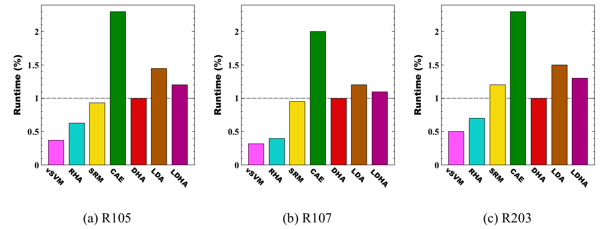Feature
Analysis
fMRI Data: Time Space

Snapshot Concept
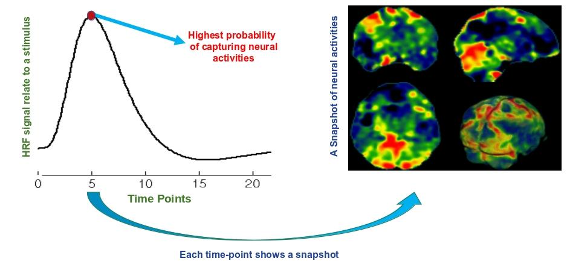General Linear Model
fMRI time series can be formulated by a linear model as follows: \[ \mathbf{F} = \mathbf{D}(\mathbf{\widehat{\beta}})^\intercal + \mathbf{\varepsilon} \]
where if we have the design matrix $\mathbf{D}$, then $\mathbf{\widehat{\beta}}$ can be calculated as follows: \[ \label{BetaEq}\mathbf{\widehat{\beta}}=\big({({\mathbf{D}}^{\intercal}{\mathbf{\Sigma}}^{-1}\mathbf{D})}^{-1}{\mathbf{D}}^{\intercal}{\mathbf{\Sigma}}^{-1}\mathbf{F}\big)^\intercal \]
Design Matrix
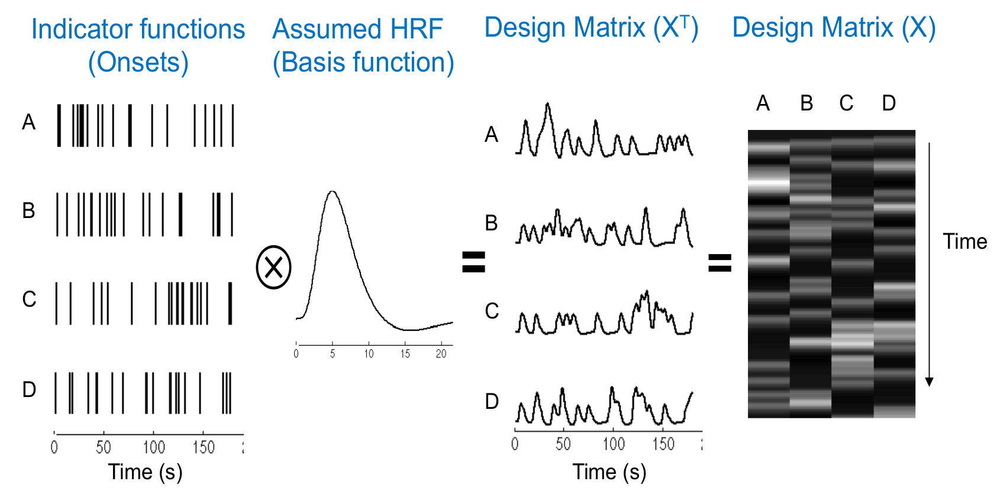Snapshot Selection
Gaussian kernel $\mathbf{G}$ is defined as follows: \[ \mathbf{G} = \frac{\mathbf{\widehat{G}}}{\sum_{j}{\mathbf{\widehat{g}}_j}} \implies \mathbf{\widehat{G}} = \bigg\{ \exp\left(\frac{-{\mathbf{\widehat{g}}}^{2}}{2{\sigma^2_G}}\right) \bigg| \text{ } \mathbf{\widehat{g}} \in \mathbb{Z} \text{ and } -2\lceil\sigma_G\rceil \leq \mathbf{\widehat{g}} \leq 2\lceil\sigma_G\rceil \bigg\} \]
The smoothed version of the design matrix can be applied as follows: \[ \mathbf{\Phi} = \{\mathbf{\phi}_{1}, \mathbf{\phi}_{2}, \dots, \mathbf{\phi}_{p}\} \implies \mathbf{\phi}_{i} = \mathbf{d}_{i}*\mathbf{G} = (\mathbf{S}_{i}*\mathbf{\Xi})*\mathbf{G} \]
The local maximum points in the $\phi_{i}$ can be calculated as follows: \[ \mathbf{S}^{*} = \{\mathbf{S}_{1}^{*}, \mathbf{S}_{2}^{*}, \dots, \mathbf{S}_{i}^{*}, \dots, \mathbf{S}_{p}^{*}\} \implies \mathbf{S}_{i}^{*} = \bigg\{ \underset{\mathbf{S}_{i}}\arg \phi_{i} \text{ }\bigg| \text{ } \frac{\partial\phi_{i}}{\partial \mathbf{S}_{i}} = 0 \text { and } \quad \frac{\partial^2\phi_{i}}{\partial {\mathbf{S}_{i}}\mathbf{S}_{i}} > 0 \bigg\} \]
The local maximum points in the $\phi_{i}$ can be calculated as follows: \[ \mathbf{\widehat{\Psi}} = \{\mathbf{f}_{j}^\intercal \text{ } | \text{ } \mathbf{f}_{j}^\intercal \in \mathbf{F}^\intercal \text{ and } j \in \mathbf{S}^{*}\} = \{\widehat{\mathbf{\psi}_{1}}, \widehat{\mathbf{\psi}_{2}}, \dots, \widehat{\mathbf{\psi}_{k}}, \dots \widehat{\mathbf{\psi}_{q}}\} \in \mathbb{R}^{m\times q} \]
Examples of smoothed design matrix
| 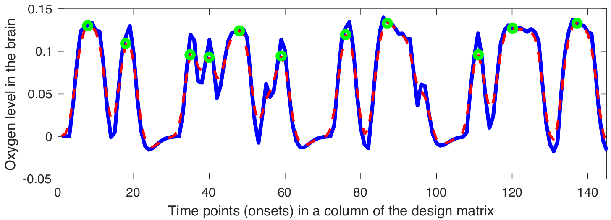 |
| 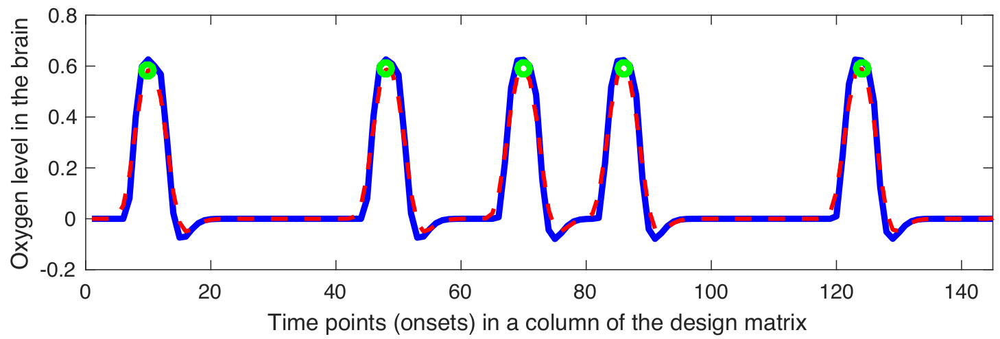 |
Multi-Region Feature Extraction
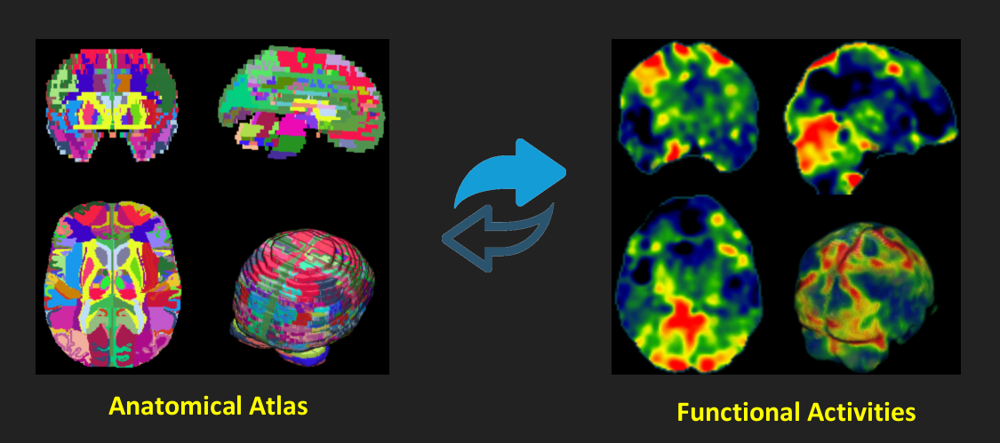Neural Activities Segmentation
Mapping to standard space: \[ \mathbf{T}_i\text{:} \qquad\quad\widehat{\mathbf{\beta}}_i \in \mathbb{R}^m \quad\to\quad \mathbf{\beta}_i \in \mathbb{R}^n \implies \mathbf{T}_i = \arg\min(NMI(\widehat{\mathbf{\beta}}_i,\mathbf{Ref})) \]
\[ \mathbf{T}_j^*\text{: } \widehat{\mathbf{\psi}}_j \in \mathbb{R}^m \to \mathbf{\psi}_j \in \mathbb{R}^n\implies \mathbf{\psi}_j = \bigg(\big(\widehat{\mathbf{\psi}}_j\big)^\intercal \mathbf{T}^*_j \bigg)^\intercal \]
Now, consider anatomical atlas $\mathbf{A} \in \mathbb{R}^n = \{\mathbf{A}_1, \mathbf{A}_2,\dots, \mathbf{A}_\ell, \dots, \mathbf{A}_L\}$, where ${\cap}_{\ell=1}^{L}\{\mathbf{A}_\ell\}=\emptyset$, ${\cup}_{\ell=1}^{L}\{\mathbf{A}_\ell\}=\mathbf{A}$, and $L$ is the number of all regions in the anatomical atlas. A segmented snapshot based on the $\ell\text{-}th$ region can be denoted as follows: \[ \mathbf{\Theta}_j = \mathbf{\psi}_j \circ \mathbf{\beta}_j^* \text{ and } \mathbf{\Theta}_{(j,\ell)} = \{\mathbf{\theta}_j^k \text{ } | \text{ } \mathbf{\theta}_j^k \in \mathbf{\Theta}_j \text{ and } k \in \mathbf{A}_\ell \} \]
The automatically detected active regions can be also defined as follows: \[ \mathbf{\Theta}_j^* = \bigg\{\mathbf{\Theta}_{(j,\ell)} | \mathbf{\Theta}_{(j,\ell)} \subset \mathbf{\Theta}_j \text { and } \sum_{\mathbf{\theta}_{(j,\ell)}^{k} \in \mathbf{\Theta}_{(j,\ell)}} | \mathbf{\theta}_{(j,\ell)}^{k} | \neq 0 \bigg\} \]
Region Based Smoothing
Gaussian kernel for each anatomical region can be defined as follows: \[ \sigma_\ell = \frac{N_\ell^2}{5N_\ell^2\log N_\ell} \]
\[ \mathbf{\widehat{V}_\ell} = \bigg\{ \exp\left(\frac{-{\mathbf{\widehat{v}}}^{2}}{2{\sigma_\ell}}\right) \bigg| \text{ } \mathbf{\widehat{v}} \in \mathbb{Z} \text{ and } -2\lceil\sigma_\ell\rceil \leq \mathbf{\widehat{v}} \leq 2\lceil\sigma_\ell\rceil \bigg\} \]
\[ \mathbf{V}_\ell = \frac{\widehat{\mathbf{V}_\ell}}{\sum_{j}{\mathbf{\widehat{v}}_j}} \]
The smoothed version of the $j\text{-}th$ snapshot can be defined as follows: \[ \forall \ell = L1 \dots L2 \to \mathbf{X}^{(j,\ell)} = \mathbf{\Theta}_{(j,\ell)} * \mathbf{V}_\ell, \implies \mathbf{X}^{(j)} = \{\mathbf{X}^{(j,L1)}, \dots, \mathbf{X}^{(j,\ell)}, \dots \mathbf{X}^{(j,L2)}\} \]
Examples of smoothed anatomical regions
| 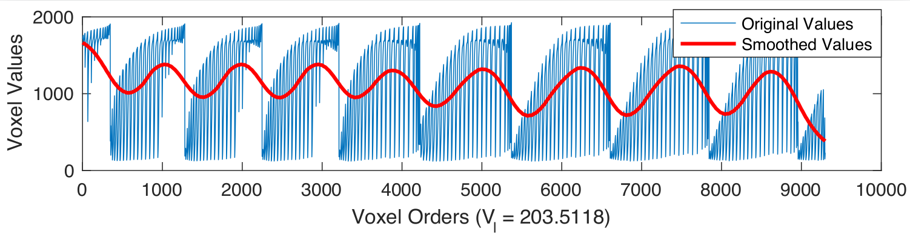 |
| 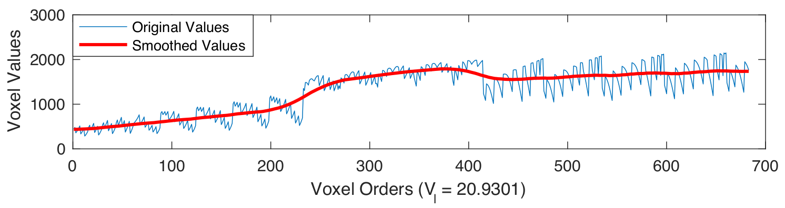 |
Weighted Spectral Cluster Ensemble (WSCE)
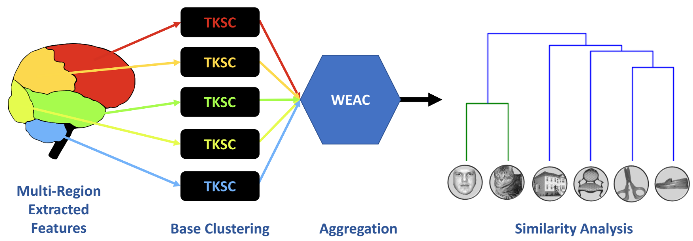Two Kernels Spectral Clustering
We calculate the non-symmetric distances (adjacency) matrix of the neural activities as follows: \[ {\mathbf{\Delta}}_{i,j}^{(\ell)}= \Bigg \{ \begin{array}{l l} exp\left(\frac{-{\|\mathbf{X}^{(i,\ell)} - \mathbf{X}^{(j,\ell)} \|}_{2}}{{\aleph}^{2}} \right) & \quad\textit{if } i\neq j \\ 0 & \quad\textit{if } i=j \end{array} \]
Partitional Kernel can be defined as follows: \[ \mathbf{\Lambda}_{PA}^{(\ell)}=\mathbf{I}-\Big(\widetilde{\mathbf{\Delta}}^{(\ell)}\Big)^{\frac{1}{2}}\mathbf{\Delta}^{(\ell)}\Big(\widetilde{\mathbf{\Delta}}^{(\ell)}\Big)^{\frac{1}{2}} \]
\[ \widetilde{\mathbf{\Delta}}_{i,j}^{(\ell)}= \Bigg \{ \begin{array}{l l} \mathbf{\widehat{\Delta}}^{(\ell)}_{i,j} & \quad\textit{if } i= j \\ 0 & \quad\textit{if } i\neq j \end{array}, \quad \text{ where } \quad \mathbf{\widehat{\Delta}}^{(\ell)} = \Big(\mathbf{\Delta}^{(\ell)}\mathbf{1}_{q} + {10}^{-10}\Big)^{\frac{-1}{2}} \]
Now, the eigendecomposition is performed for calculating eigenvectors of $\mathbf{\Lambda}_{PA}^{(\ell)}$: \[ \mathbf{E}^{(\ell)} = eigens\Big(\mathbf{\Lambda}_{PA}^{(\ell)}\Big) \]
Two Kernels Spectral Clustering
The coefficient $\mathbf{\widetilde{E}}^{(\ell)}$ will be defined for normalizing the matrix $\mathbf{E}^{(\ell)}$: \[ {\mathbf{\widetilde{E}}}_{i}^{(\ell)} = {\left(\sum_{i=1}^{q}{\mathbf{E}}_{i1}^{(\ell)} \times {\mathbf{E}}_{i2}^{(\ell)}\right)}^{\frac{1}{2}} + {10}^{-20} \]
The normalized matrix of eigenvectors will be calculated as follows: \[ {\mathbf{\widehat{E}}}^{(\ell)}_{ij} = {\mathbf{E}}^{(\ell)}_{ij} \times {\mathbf{\widetilde{E}}}_{i}^{(\ell)} \]
The Partitional result of TKSC will be calculated by applying the simple k-means on the matrix ${\mathbf{\widehat{E}}}^{(\ell)}$ as follows: \[ \widetilde{\pi}^{(\ell)}_{PA} = kmeans({\mathbf{\widehat{E}}}^{(\ell)}, p) \]
Modular Kernel can be defined as follows: \[ \mathbf{\widetilde{\pi}}_{MO}^{(\ell)}=\frac{1}{\max\Big( \widetilde{\mathbf{\Delta}}^{(\ell)} - \mathbf{\Delta}^{(\ell)} \Big)} \widetilde{\mathbf{\Delta}}^{(\ell)} - \mathbf{\Delta}^{(\ell)} \]
Weighted Evidence Accumulation Clustering
Normalized Modularity (NM) is developed for evaluating the diversity of the individual results: \[ \mathbf{O} = NM(\mathbf{P}, \mathbf{M}) = \frac{1}{2} + \frac{1}{4\sum_\mathbf{M}^{}\mathbf{M}_{ij}}\sum_{ij}^{}\left[{\Gamma}(\mathbf{M}_{ij}) - \frac{\delta({\mathbf{M}}_{i})\delta({\mathbf{M}}_{j})}{2\sum_\mathbf{M}^{}\mathbf{M}_{ij}}\right](1 - {\Gamma}(\mathbf{P}_i - \mathbf{P}_j) \]
\[ {\Gamma}(\mathbf{x}) = \Bigg\{ \begin{array}{l l} 0 & \quad\textit{if } \mathbf{x} = 0\\ 1 & \quad\textit{Otherwise} \end{array} \]
We develop Weighted Evidence Accumulation Clustering (WEAC) for generating the co-association matrix: \[ \xi = WEAC(\mathbf{\Pi}) = \left( \begin{array}{cccc} \zeta_{11} & \zeta_{12} & \dots & \zeta_{1q} \\ \zeta_{21} & \zeta_{22} & \dots & \zeta_{2q} \\ \vdots & \vdots & \vdots & \vdots \\ \zeta_{i1} &\zeta_{i2} & \zeta_{ij} & \zeta_{iq} \\ \vdots & \vdots & \vdots & \vdots \\ \zeta_{q1} & \zeta_{q2} & \dots & \zeta_{qq} \\ \end{array} \right) \quad \text{ where } \quad \zeta_{ij} = \frac{\sum_{\ell=L1}^{L2} \mathbf{O}^{(\ell)}_i + \mathbf{O}^{(\ell)}_j}{2q(L2 - L1)} \]
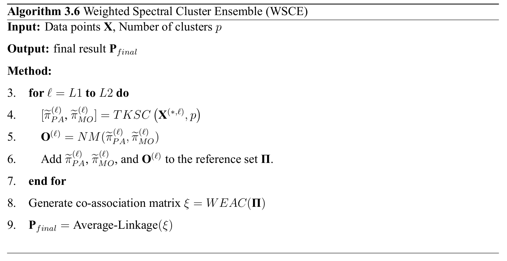
Multi-Region Ensemble Learning (MREL)
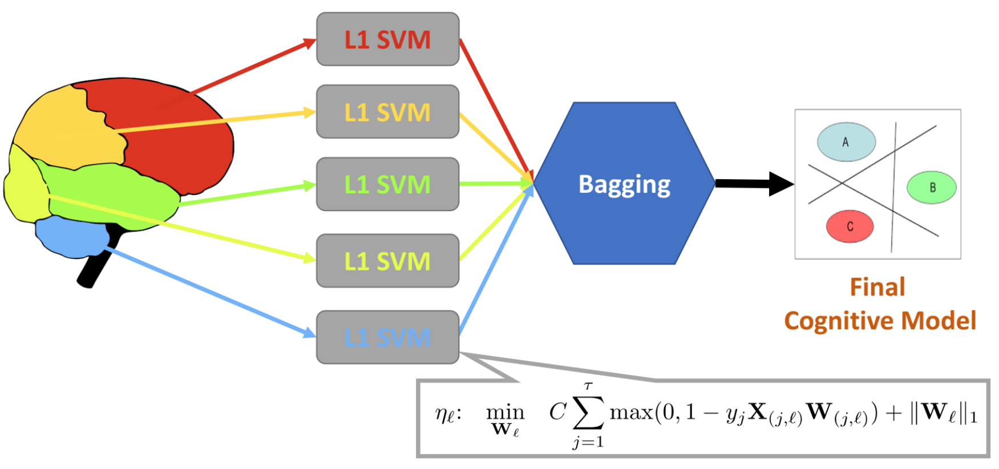Correlation analysis
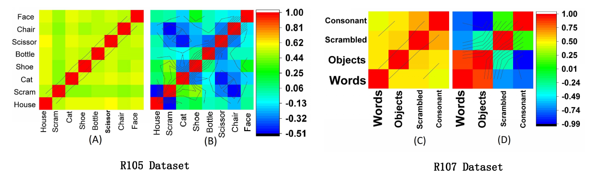Unsupervised Analysis
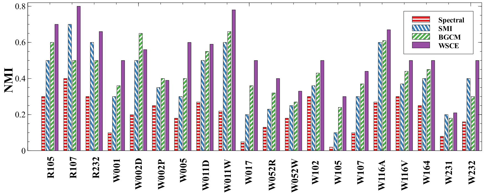Parameters Analysis
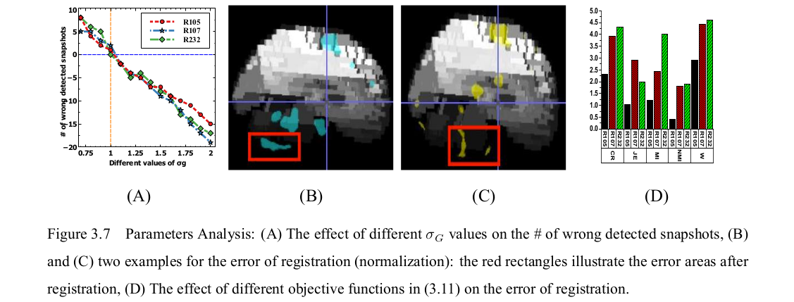R105-Bottle |
R105-Cat |
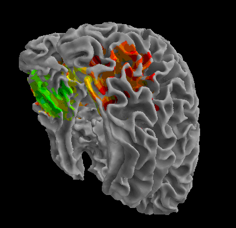 R105-Face |
R105-Shoe |
| 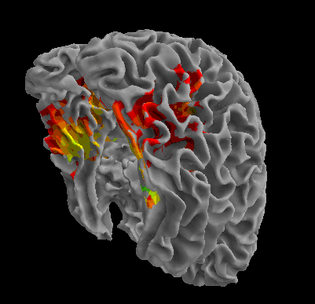 R105-House |
R105-Scissor |
R105-Scramble |
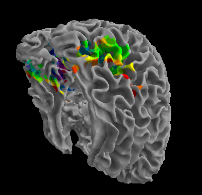 R105-Chair |
Unsupervised Similarity Analysis
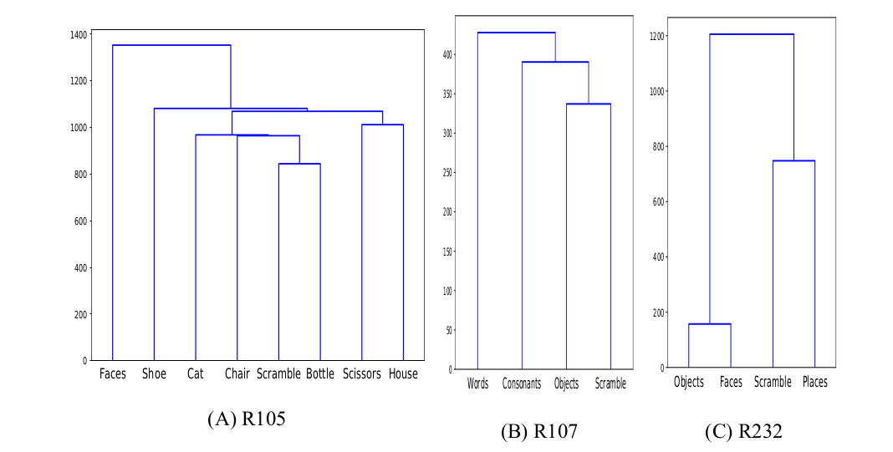Deep
Representational
Similarity
Analysis
Deep Representational Similarity Analysis
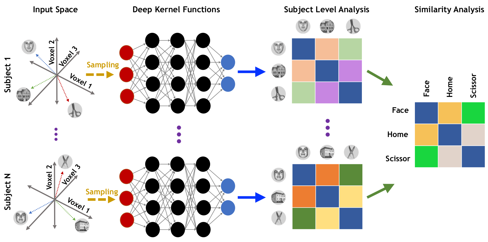DRSA: Objective
\[ \underset{\mathbf{B}^{(\ell)}}{\min}\text{ }J_{R}^{(\ell)} = \underset{\mathbf{B}^{(\ell)}, \theta^{(\ell)}}{\min}\Bigg( \sum_{i \in \mathbf{\Psi}^{(j)}}\Big\|f\big(\mathbf{x}_{i.}^{(\ell)}; \theta^{(\ell)}\big) - \mathbf{d}_{i.}^{(\ell)}\mathbf{B}^{(\ell)}\Big\|^2_2 + r\Big(\mathbf{B}^{(\ell)}\Big)\Bigg) \]
We use multiple stacked layers of nonlinear transformation function as follows: \[ f\big(\mathbf{x}; \theta\big) = \mathbf{W}_{C}\mathbf{h}_{C-1} + \mathbf{b}_{C},\quad \text{ w.r.t. } \quad \mathbf{h}_{m}=g(\mathbf{W}_{m}\mathbf{h}_{m-1} + \mathbf{b}_{m}) \text{ for } 2 \leq m < C \]
DRSA regularization term is defined as follows: \[ r\Big(\mathbf{B}\Big) = \sum_{j=1}^{V}\sum_{k=1}^{P} \alpha\Big|\Gamma\big(\beta_{kj}\big)\Big| + 10\alpha\Big(\beta_{kj}\Big)^2 \quad \text{w.r.t.} \quad \Gamma(\beta) = \begin{cases} 10^{-20} & \quad \text{if } \beta = 0\\ \beta & \quad \text{otherwise} \end{cases} \]
DRSA: Optimization
\[ \nabla_{\mathbf{B}}\Big(J_R\Big) = \alpha \text{sign}\Big(\Gamma\big(\mathbf{B}\big)\Big) + 20\alpha \mathbf{B}\\ - 2 \sum_{i \in \mathbf{\Psi}^{(j)}}\mathbf{d}_{i.}^\top\Big(f\big(\mathbf{x}_{i.}; \theta\big) - \mathbf{d}_{i.}\mathbf{B}\Big) \]
Covariance Analysis
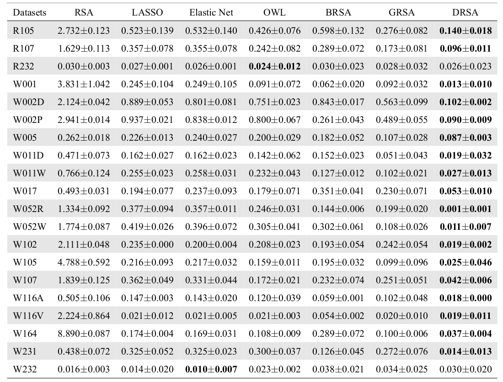Correlation Analysis

Correlation Analysis
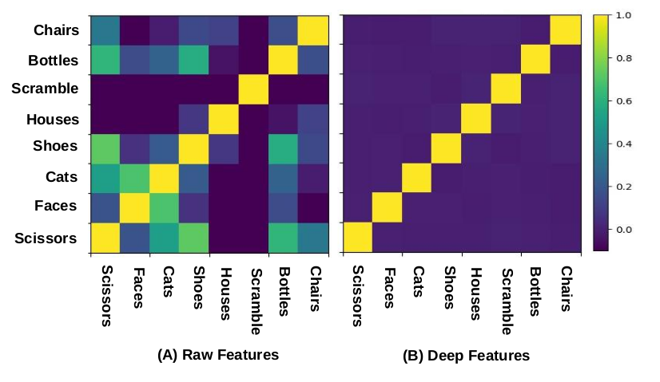Runtime Analysis
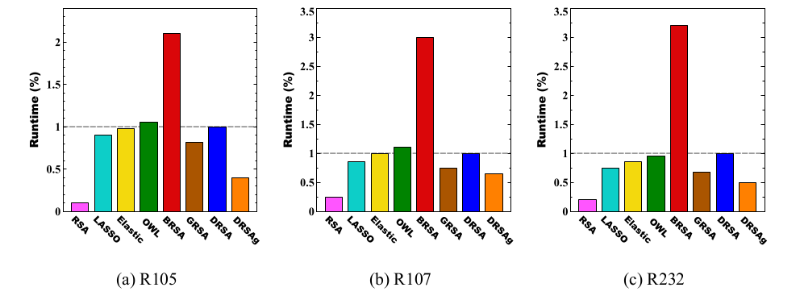Similarity Analysis
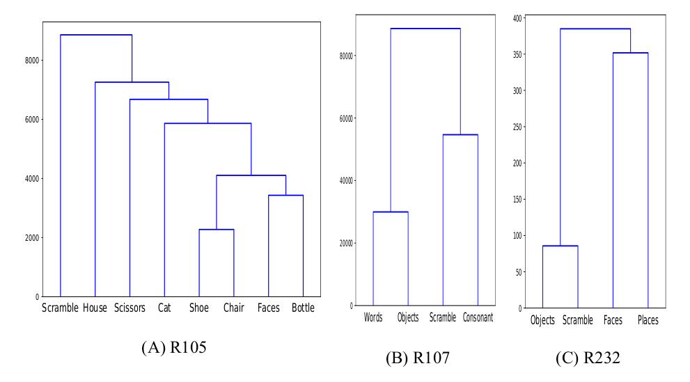R105–Scissor |
R105-Bottle |
R105-Cat |
R105–Chair |
| 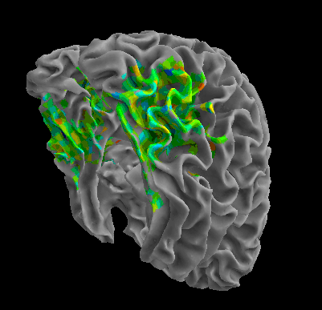 R105-Face |
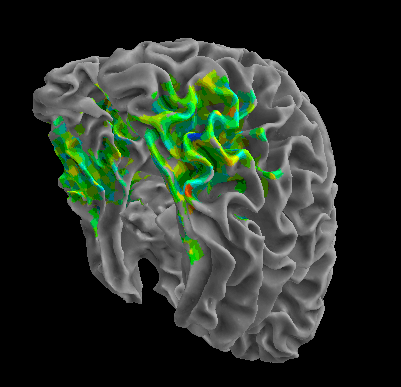 R105-Home |
R105–Scramble |
R105-Shoe |
| 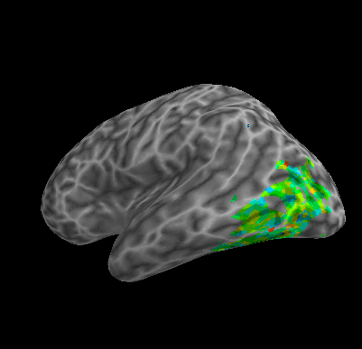 R107–Word |
R107–Object |
 R107–Consonant |
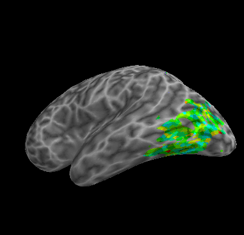 R107–Scramble |
Between-Datasets Similarity Analysis
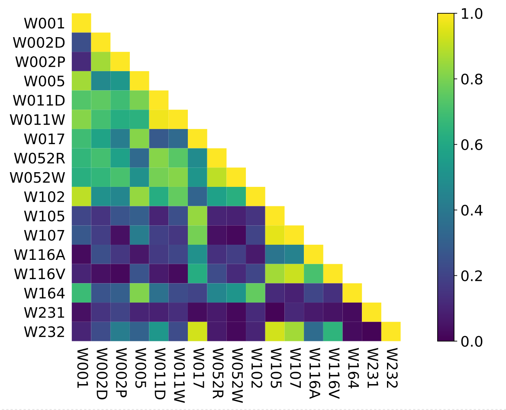Imbalance
Multi-Voxel
Pattern
Analysis
Imbalance AdaBoost Binary Classification
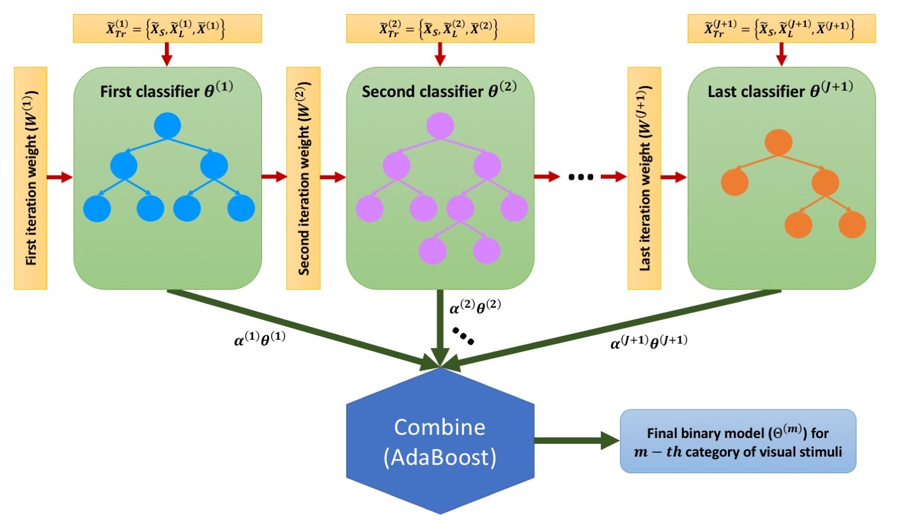Multi-class IABC Classification Algorithm
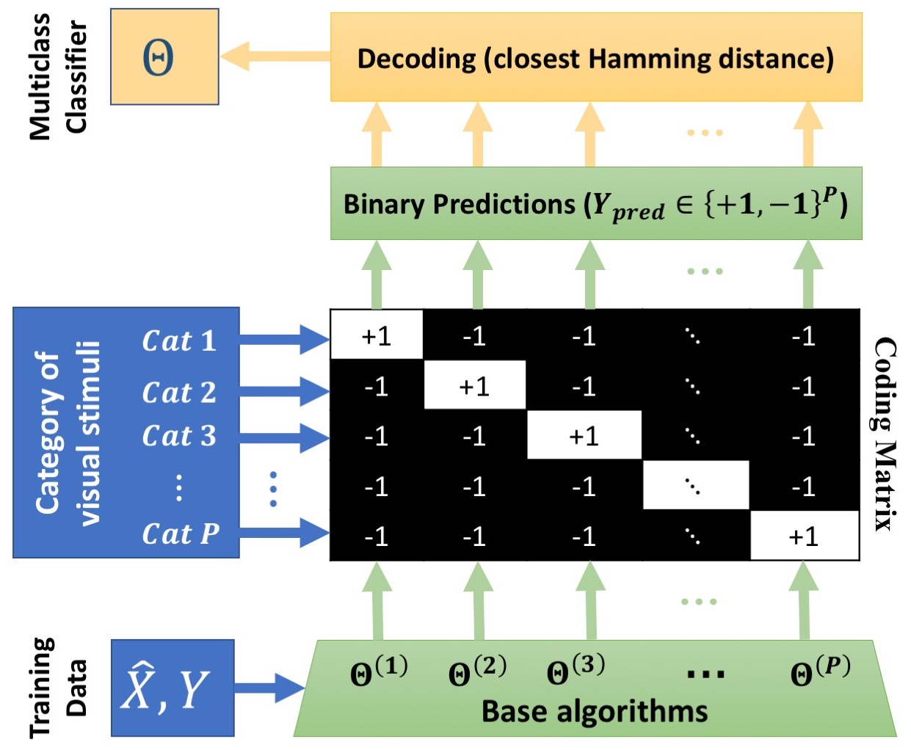Runtime Analysis
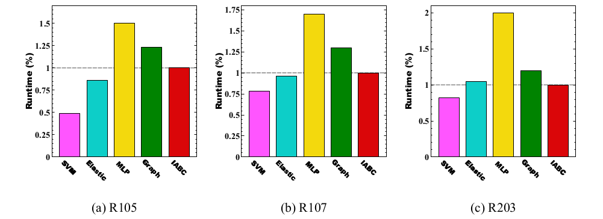Conclusion
| 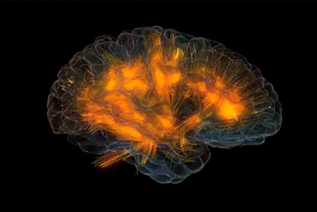 | 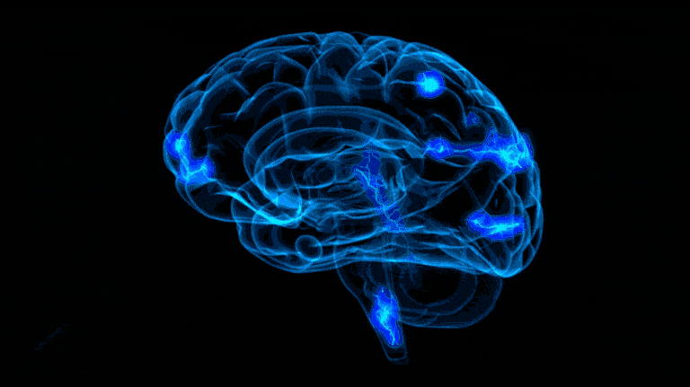 | 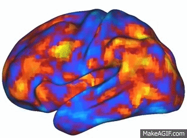 |
Conclusion
Publications
- M. Yousefnezhad and D. Zhang. Deep Hyperalignment. NIPS, 2017, Spotlight.
- M. Yousefnezhad and D. Zhang. Multi-Region Neural Representation: A novel model for decoding visual stimuli in human brains. SDM, 2017, Oral Presentation.
- M. Yousefnezhad and D. Zhang. Local Discriminant Hyperalignment for Multi-Subject fMRI Data Alignment. AAAI, 2017, Oral Presentation.
- M. Yousefnezhad and D. Zhang. Decoding visual stimuli in human brain by using Anatomical Pattern Analysis on fMRI images BICS, China. 2016, Best Student Paper Award.
- M. Yousefnezhad and D. Zhang. Weighted spectral cluster ensemble. ICDM, 2015, Oral Presentation.
- M. Yousefnezhad and Daoqiang Zhang. Anatomical Pattern Analysis for decoding visual stimuli in human brains. Cognitive Computation, 2017.
- M. Yousefnezhad, S.J. Huang, D. Zhang. WoCE: a framework for clustering ensemble by exploiting the wisdom of Crowds theory. IEEE Transactions on Cybernetics, 2017.
- M. Yousefnezhad, A. Reihanian, D. Zhang, B. Minaei-Bidgoli. A new selection strategy for selective cluster ensemble based on Diversity and Independency. EAAI, 2016.
Acknowledgement